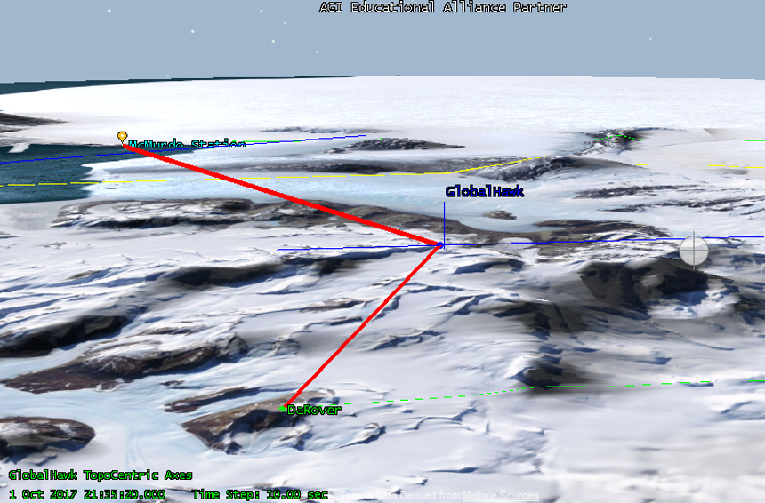
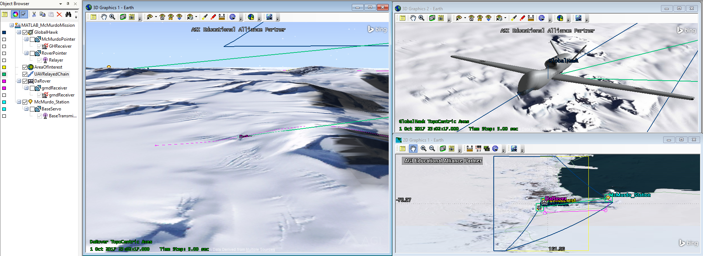

Aircraft Mission Simulation and Analysis Using A Multiplatform Approach
During the Fall 2017 semester, the Aircraft Rapid Prototyping Laboratory (ARPL) was exploring effective methods to develop and test systems for innovative uses of unmanned aerial systems (UAVs), aircraft, and spacecraft. Simulation modularity, fidelity, effectiveness, and affordability are key drivers of prototype designs. The purpose of this particular research thrust was to explore the potential value of AGI’s Systems Tool Kit (STK) software package in the context of aircraft research and demonstrate capabilities including iterative design, cross-platform integration, and near-real time data visualization and analysis.

Bent-Pipe Communication
Typically, one would use the STK software in order to create a scenario with certain defined features. One such example would be to test a certain aircraft’s performance as it flies on a pre-defined path. This can be extremely valuable for post-mission analysis. However, the use of the STK's Application Programming Interface (API) to generate the scenarios defined by code could bring additional capabilities. Hence, I proposed and then developed a project which combined STK and Matlab to simulate a scenario with uncertain conditions.
The source code can be found on GitHub here .
By defining certain conditions through code, we were able to test mission feasibilities given some conditions of uncertainty. We showed that STK could be a powerful test bed for autonomous control systems research. This should allow us to significantly reduce flight test costs associated with system failures from early test flights.
The MATLAB code, through iteration, was able to obtain topographic data around a certain point of interest at a set granularity. Using that data, we were able to determine the peaks of the mountain range in order to estimate ground station blind spots. All this data was stored in MATLAB for further analysis. Using the array of information, the program was able to autonomously generate flight paths for the Global Hawk and find the ground vehicle, which had been placed pseudo-randomly behind the mountain range.

A module of this project was submitted to Analytical Graphics' Educational Alliance Program University Grant Competition where it placed third.